reklaame vuurwerkbril
reklaame vuurwerkbrilde vuurwerkbril is om met ouwt en niew op te doen.
koop en maak
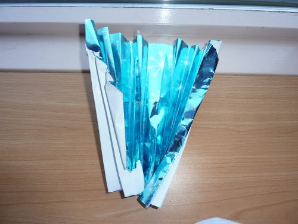
Dit is en kerst waaier. Eerst pak je papier. Je vuowt de hele tijt de randen om
. En als je ze alle maal hebt gevuowen dan plak je ze vast.
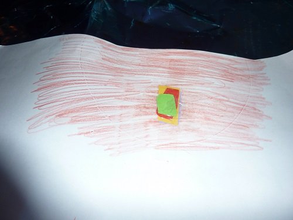 KLEURENBORD
Pak wit papier en doe er en vormpje onder.
En ga met en kleurpotloot er over heen.
pak dan 4 verschillende kleuren papier en plak ze samen op het kleurenbord.
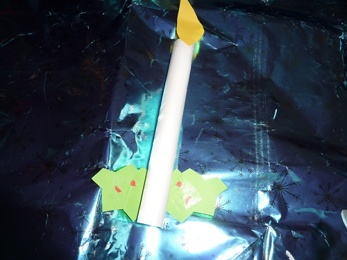kerstboomkaars
je pakt eerst wit papier en dat rol je op en je plakt het vast.
en je pakt groen papieren je vuowt het dubel en knipt 1 blad.
en dan pak je geel papier en knipt en vlam en dan plak je het blad en de vlam op de kaarsop[ de tekening
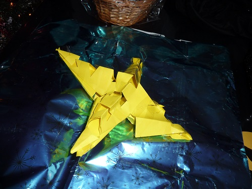 ster
eerst moet je vouwen en dan knip je vormen dan maak je nog en vouw dan vouw je het uit.
en dan vouw je hem hele maal.
reklaame vuurwerkbril
de vuurwerkbril is om met ouwt en niew op te doen.
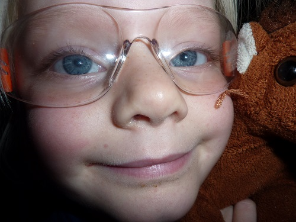vuurwerk
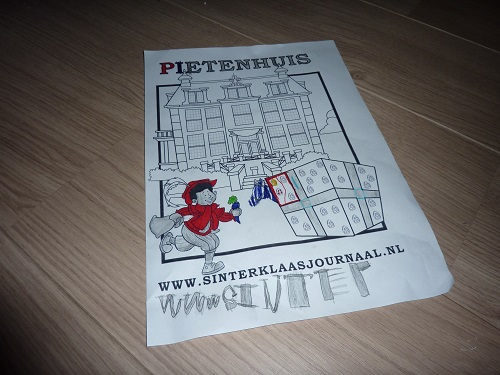www.sint
je print het uit bij www.sinterklaasjounaal.nl .
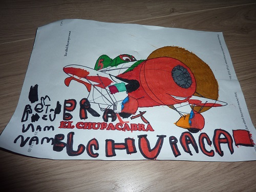el
dit kun je vinden op elcupacabra.
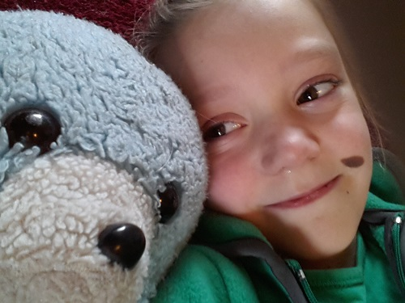ik
dit ben ik en ik heet annelinde en van de achter naam boer.
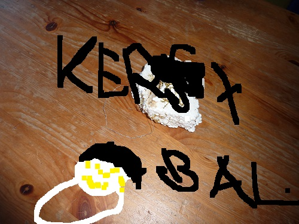bal
je pakt piep schuim en je doet er en touw om heen en dan strooi je gliter op .
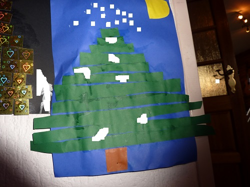boom
je maakt met groen papier streepe je maakt ze steets korter en je plakt ze van de onderkand van groot naar klein.
en je maakt en maan en steren en ndat plak je op.
en je versiert hem.
je kan ook iets bestelen van paarden.
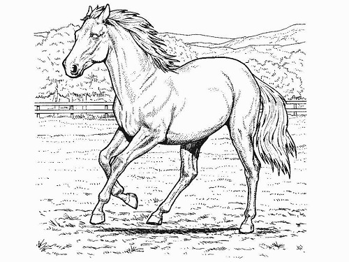paard
ik heb ook en plaatje van 2 paarden in en menesjen.
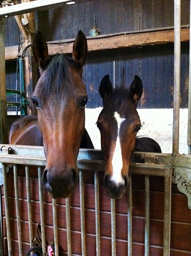paarden